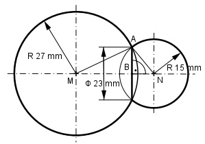

Aufgabe 393 Zwei Kugeln mit einem Radius von 27 mm und einem von 15 mm werden so abgeschliffen, dass sie eine gemeinsame Berührungsfläche mit einem Durchmesser von 23 mm haben. Wie groß sind die Volumina der beiden abgeschliffenen Segmente, kleineres zuerst?

Satz von Pythagoras im Dreieck MBA: MA = rKugel1 = 27 mm AB = 23 mm/2 = 11,5 mm MA2 = AB2 + MB2 | -AB2 MB2 = MA2 - AB2 = = 272 mm2 - 11,52 mm2 = 596,75 mm2 |√ MB = 24,43 mm hKugelabschnitt1 = 27 mm - 24,43 mm = 2,57 mm л V1 = --- * hKugelabschnitt12 * 3 * (3 * rKugel1 - hKugelabschnitt1) л V1 = --- * 2,572 * (3 * 27 - 2,57) mm3 3 = 542 mm3 Satz von Pythagoras im Dreieck NAB: NA = rKugel2 = 15 mm AB = 23 mm/2 = 11,5 mm NA2 = AB2 + NB2 | -AB2 NB2 = NA2 - AB2 = = 152 mm2 - 11,52 mm2 = 92,75 mm2 |√ NB = 9,63 mm hKugelabschnitt2 = 15 mm - 9,63 mm = 5,37 mm л V2 = --- * hKugelabschnitt22 * 3 * (3 * rKugel2 - hKugelabschnitt2) л V2 = --- * 5,372 * (3 * 15 - 5,37) mm3 3 = 1 196 mm3